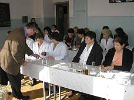
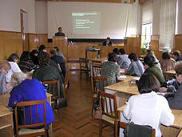
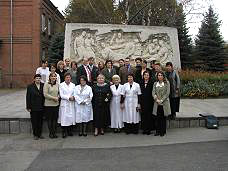

Научно-практический семинар
«Практические и теоретические аспекты резистентности к антимикробным препаратам»

23-24 октября 2002 г. во Владикавказе научно-методическим центром Минздрава России по мониторингу антибиотикорезистентности (ЦМАР), НИИ антимикробной химиотерапии СГМА (НИИ АХ), Межрегиональной ассоциацией по клинической микробиологии и антимикробной химиотерапии (МАКМАХ), Швейцарским ведомством развития и сотрудничества (SDC) при поддержке компании "биоМерье" был проведен научно-практический семинар, посвященный проблемам антибиотикорезистентности.
С лекциями по наиболее актуальным вопросам клинической микробиологии, антибактериальной терапии и антибиотикопрофилактики выступили научные сотрудники НИИ антимикробной химиотерапии СГМА Р.С. Козлов и А.В. Дехнич.
В рамках семинара были рассмотрены проблемы подхода к выбору антибиотиков для определения чувствительности и интерпретации результатов определения чувствительности к антибиотикам стафилококков, энтерококков, пневмококков, энтеробактерий, синегнойной палочки, представителей семейства Enterobacteriaceae, а также "привередливых" микроорганизмов - стрептококков, пневмококков и гемофил. Было уделено внимание факторам, влияющим на результаты определения чувствительности и проблем внутреннего контроля качества.
Отдельно рассматривалась проблема определения чувствительности Mycobacterium tuberculosis, вопросы, касающиеся множественно-устойчивого туберкулеза.
Освещены актуальные вопросы нозокомиальных инфекций и состояния антибиотикорезистентности нозокомиальных возбудителей в России.
Фотографии с семинара
|  |  |
|  | |